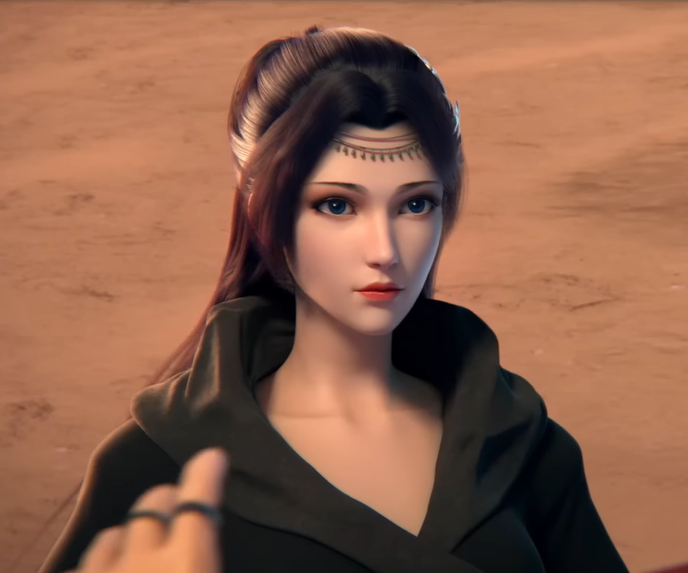

.jpg)
ជួបលើកដំបូង
អ៊ីន អ៊ីន កំពុងប្រឈមមុខជាមួយសត្វតោចរណៃពណ៌ស្វាយ
ជាអ្នកដឹកនាំបក្ស ពពកអ័ព្ទ(អ៊ីនឡាន)។ នាងជាអ្នកហាត់គុណខ្លាំងពូកែ និងស្រស់ស្អាតម្នាក់ ដែលមានចរិតម៉ឺងម៉ាត់ និងម៉ត់ចត់ ហើយមានទំនួលខុសត្រូវខ្ពស់។
.jpg)
អ៊ីន អ៊ីន គឺជាតួអង្គដ៏សំខាន់ម្នាក់នៅក្នុងរឿង ប្រយុទ្ធទៅកាន់មេឃា។ នាងគឺជាអ្នកដឹកនាំបក្សពពកអ័ព្ទ ហើយក្រោយមកក្លាយជាមេបក្សផ្កា។ នាងជាអ្នកហាត់គុណខ្លាំងពូកែ និងស្រស់ស្អាតម្នាក់ ដែលមានចរិតម៉ឺងម៉ាត់ និងម៉ត់ចត់ ហើយមានទំនួលខុសត្រូវខ្ពស់។
គេគឺជាគ្រូរបស់ អ៊ីន អ៊ីន រហូតដល់ពេលដែលគេបានសម្រេចចិត្តចុះចូលជាមួយ សំណាក់ព្រលឹង។ នៅទីបំផុត គេបានបិទខ្ទប់កម្លាំងធាតុរបស់ អ៊ីន អ៊ីន និងព្យាយាមបង្ខំនាងឱ្យរៀបការជាមួយ ហ្គូ ហឺ។ ជាសំណាងល្អ សៀវ យាន បានបង្ហាញខ្លួនទាន់ពេល ហើយបានបញ្ឈប់មង្គលការនោះ។
នាងគឺជាកូនសិស្សរបស់ អ៊ីន អ៊ីន។ អ៊ីន អ៊ីន គឺជាអ្នកដែលបានអនុញ្ញាតឱ្យ ណាឡាន ទៅត្រកូលសៀវ ដើម្បីផ្ដាច់ពាក្យជាមួយ សៀវ យាន។ ទង្វើមួយនេះហើយដែលជាដើមហេតុបង្កឱ្យមានការប៉ះទង្គិចគ្នាយ៉ាងខ្លាំងរវាង សៀវ យាន និង បក្សពពកអ័ព្ទ។ ណាឡាន នៅតែបន្តតាមបម្រើគ្រូរបស់នាងជានិច្ច ទោះបីជា អ៊ីន អ៊ីន ចាកចេញពីនគរជៀម៉ាទៅចូលរួមជាមួយ បក្សផ្កា ក៏ដោយ។
គឺជាបុរសដំបូងគេដែលបានឆក់យកស្នាមថើបដំបូង របស់ អ៊ីន អ៊ីន ដែលធ្វើឱ្យទំនាក់ទំនងរបស់ពួកគេកាន់តែស្មុគស្មាញឡើងពីមួយថ្ងៃទៅមួយថ្ងៃ។ បក្សពពកអ័ព្ទរបស់នាង និង សៀវ យាន គឺជាសត្រូវស៊ីសាច់ហុតឈាមនឹងគ្នា ហើយ សៀវ យាន ថែមទាំងបានសម្លាប់ អ៊ីន សាន ដែលជាគ្រូរបស់នាងទៀតផង។
នាងមានសមត្ថភាពប្រើប្រាស់ស្នៀតផ្សេងៗដូចជាស្នៀត ស្រមោលខ្យល់ (Wind Afterimages) ក្បួនកំហឹងខ្យល់ឃុំព្រលឹង (Furious Wind-Soul Sealing Array) ខ្យល់ព្យុះពិឃាត (Extreme Wind Fallen Massacre)...។
នាងស្ថិតនៅកម្រិត អធិរាជប្រយុទ្ធ ផ្កាយ៣ នៅពេលបង្ហាញខ្លួនដំបូង។ ក្រោយមកក៏បានឡើងទៅដល់កម្រិត តូវហ្ស៊ុន ផ្កាយ៩ នៅពេលដែលស្រូបយកកម្លាំងធាតុដែល លោកយាយហួា បានផ្ទេរឱ្យមុនស្លាប់បានទាំងស្រុង។
"អាចទៅរួចយ៉ាងដូចម្ដេចដែលវាជាកម្រិតទាបបំផុតនៃវិជ្ជាផ្ដុំកម្លាំងធាតុ? គ្រូរបស់ប្រុសម្នាក់នេះហាក់ដូចជាមនុស្សកំណាញ់ខ្លាំងណាស់ ឬមួយក៏គាត់មិនដឹងថាវិជ្ជាផ្ដុំកម្លាំងធាតុដែលល្អ មានសារៈសំខាន់សម្រាប់អ្នកហាត់ដំបូងកម្រិតណាទេ?" - អ៊ីន អ៊ីន និយាយបន្ទាប់ពីបានឃើញវិជ្ជាផ្ដុំកម្លាំងធាតុដ៏អន់របស់ សៀវ យាន
"អាយុនៅក្មេងសោះ តែបែរជាកាចសាហាវម្ល៉េះពេលខឹង គិតទៅខ្ញុំខំមានបំណងចង់ជួយឯង។ ប៉ុន្តែបើឯងចូលចិត្តធ្វើជាអ្នកក្លាហាន និងចង់បង្អួតអំនួតបែបនេះ ឯងដោះស្រាយវាដោយខ្លួនឯងទៅ" - អ៊ីន អ៊ីន និយាយបន្ទាប់ពីត្រូវ សៀវ យាន ស្រែកដាក់
"យ៉ាវ យាន បើសិនជាខ្ញុំបាត់បង់ភាពបរិសុទ្ធទៅឯង ខ្ញុំនឹងសម្លាប់ឯងមុន រួចសម្លាប់ខ្លួនឯងតាមក្រោយ!" - អ៊ីន អ៊ីន និយាយទៅកាន់ សៀវ យាន
"បន្ទាប់ពីហ្វឹកហាត់ម្នាក់ឯងអស់ជាច្រើនឆ្នាំមក ខ្ញុំមិននឹកស្មានថា... ក្មេងប្រុសម្នាក់នេះ..." - អ៊ីន អ៊ីន និយាយទៅកាន់ខ្លួនឯងអំពីការចាប់ចិត្តលើ សៀវ យាន
"ទោះជាយ៉ាងណា ក្នុងពេលដែលឯងបានចាកចេញទៅហើយ អ៊ីន ជឺ ដែលធ្លាប់រំភើបដោយសារឯងនឹងរលាយបាត់ទៅជារៀងរហូត។ ចាប់ពីពេលនេះទៅ ខ្ញុំនឹងជាមេបក្សពពកអ័ព្ទ អ៊ីណ អ៊ីន។ មនោសញ្ចេតនាផ្ទាល់ខ្លួនទាំងនេះ ដើមឡើយមិនគួរជារបស់ខ្ញុំឡើយ។ ចាត់ទុកថាពេលនេះ ជាការធ្វើតាមចិត្តខ្លួនឯងម្ដងជាលើកចុងក្រោយទៅចុះ" - អ៊ីន អ៊ីន សម្លឹងមើល សៀវ យាន ដែលចាកចេញពីអាណាចក្រជៀម៉ា
"អាល្អិត ឯងពិតជាធំដឹងក្តីហើយ។ ឥឡូវនេះនៅពេលដែលបក្សពពកអ័ព្ទបានក្លាយជាបែបនេះទៅហើយ ខ្ញុំក៏ចង់ចេញទៅដើរលេងមើលពិភពលោកខាងក្រៅខ្លះដែរ។ ប្រហែលជាខ្ញុំនឹងត្រឡប់មកវិញ នៅពេលដែលខ្ញុំអាចដោះស្រាយរឿងរ៉ាវក្នុងចិត្តបាន។ នៅពេលនោះ ខ្ញុំប្រហែលជានឹងមិនបដិសេធឡើយ ប្រសិនបើឯងនៅតែចង់ឱ្យខ្ញុំនៅក្បែរដើម្បីជួយឯង" - អ៊ីន អ៊ីន និយាយទៅកាន់ សៀវ យាន មុនពេលលាគ្នា
"ពេលខ្លះ ខ្ញុំគិតថាប្រសិនបើឯងមានភាពក្លាហានជាងនេះបន្តិច កាលនៅក្នុងរូងភ្នំនាពេលនោះ ហើយមិនខ្វល់ពីការគំរាមកំហែងរបស់ខ្ញុំ ពេលនេះប្រហែលជា..." - អ៊ីន អ៊ីន និយាយទៅកាន់ សៀវ យាន
សូមអញ្ជើញមកមើលរូបភាពពិសេសៗរបស់ អ៊ីន អ៊ីន។
.jpg)
.jpg)

.png)
.jpg)
.png)
.webp)
.jpg)
.jpg)
.jpg)
.jpg)
.jpg)
.jpg)
.jpg)
បើមិនបានឈានជើងចូលក្នុងទ្វារសំណាក់លោកគ្រូទេ នោះក៏គ្មានការបង្ហាត់បង្រៀនគម្ពីរវិជ្ជាគុនដែរ។
ខ្ញុំនៅចាំបានថា កាលដែលខ្ញុំបានចូលរួមជាមួយបក្សពពកអ័ព្ទដំបូង ខ្ញុំនៅជាក្មេងស្រីដ៏ល្ងង់ខ្លៅម្នាក់នៅឡើយ។ ក្រៅពីការហ្វឹកហាត់ ហាក់ដូចជាគ្មានអ្វីអាចទាក់ទាញចំណាប់អារម្មណ៍ខ្ញុំបាននោះទេ។
ខ្ញុំចងចាំរាល់ទងផ្កា រាល់ស្លឹកឈើ រាល់ដុំឥដ្ឋ និងក្បឿងនៃបក្សពពកអ័ព្ទយ៉ាងច្បាស់។ រហូតមកដល់ពេលនេះ ខ្ញុំនៅតែនឹកនាដល់ក្រុមបងប្អូនដែលធ្លាប់សើចសប្បាយ និងលេងជាមួយគ្នានៅលើទីលានហ្វឹកហាត់។
លោកគ្រូ អ៊ីន សាន គឺជាមនុស្សដ៏អស្ចារ្យម្នាក់។ គាត់បានបង្រៀនខ្ញុំនូវរឿងរ៉ាវជាច្រើន ប៉ុន្តែគាត់មិនដែលប្រាប់ខ្ញុំពីរបៀបប្រឈមមុខនឹងអារម្មណ៍មនោសញ្ចេតនានោះទេ។
ទោះបីជាបក្សពពកអ័ព្ទ មើលទៅហាក់ដូចជាអាក្រក់ខ្លាំងក្នុងកែវភ្នែករបស់អ្នកក៏ដោយ ក៏ខ្ញុំនៅតែស្រឡាញ់ទីកន្លែងនេះ ដែលបានចិញ្ចឹមបីបាច់ និងបង្ហាត់បង្រៀនខ្ញុំ។
បើគ្មានលោកគ្រូ និងបក្សពពកអ័ព្ទទេ ខ្ញុំក៏គ្មានអ្វីគ្រប់យ៉ាង កុំថាឡើយដល់ថ្នាក់ក្លាយជាកំពូលអ្នកខ្លាំងទាំងដប់នៅក្នុងនគរជៀម៉ា។
សម្រាប់បក្សពពគអ័ព្ទ ខ្ញុំសុខចិត្តលះបង់គ្រប់យ៉ាង រួមទាំងជីវិតខ្ញុំផ្ទាល់។ ទីនេះគឺជាផ្ទះរបស់ខ្ញុំ។ សម្រាប់ផ្ទះ តើមានអ្វីដែលមិនអាចលះបង់បាននោះ?
ខ្ញុំមិនដែលចង់បដិសេធក្នុងការធំដឹងក្តីឡើយ ប៉ុន្តែការធំដឹងក្តីបានផ្តល់ឱ្យខ្ញុំនូវការឈឺចាប់ពិតប្រាកដ។ នៅពេលដែលខ្ញុំដឹងថា ខ្ញុំត្រូវតែរៀបការជាមួយមនុស្សដែលខ្ញុំមិនបានស្រឡាញ់ទាល់តែសោះដើម្បីបក្សពពលអ័ព្ទ បេះដូងរបស់ខ្ញុំហាក់ដូចជាត្រូវបានចាក់រាប់ពាន់កាំបិត ហើយវាពិតជាឈឺចាប់ណាស់...
ប៉ុន្តែនៅពេលដែលខ្ញុំទទួលតំណែងមេបក្សពពកអ័ព្ទ បន្តពីលោកគ្រូ ខ្ញុំដឹងថាខ្ញុំមិនអាចធ្វើតាមចិត្តខ្លួនឯងទៀតឡើយ។ ខ្ញុំ អ៊ីន អ៊ីន លែងជាក្មេងស្រីដែលរស់នៅយ៉ាងមានសេរីភាពទៀតហើយ ប៉ុន្តែគឺជាមេបក្សជំនាន់ទី ៩ នៃបក្សពពកអ័ព្ទ។
ក្នុងនាមជាមេបក្ស ខ្ញុំនឹងមានកូនសិស្សនៅថ្ងៃអនាគត។ នៅពេលដែលខ្ញុំចាស់ពេកមិនអាចការពារបក្សពពកអ័ព្ទបាន ម្នាក់ក្នុងចំណោមពួកគេនឹងទទួលតំណែងមេបក្សបន្តពីខ្ញុំ ដូចដែលលោកគ្រូបានប្រគល់វាឱ្យខ្ញុំដែរ។
ទោះជាយ៉ាងណាក៏ដោយ ខ្ញុំមិននឹកស្មានថាបក្សពពកអ័ព្ទ ដែលបានបន្តវេនអស់រយៈពេល ៩ជំនាន់មកហើយនោះ បែរជាត្រូវវិនាសក្នុងកណ្តាប់ដៃរបស់ខ្ញុំ ហើយគឺជាគេទៅវិញដែលជាអ្នករំលាយអាណាចក្រដ៏ធំធេងមួយនេះ។
ប្រសិនបើខ្ញុំមិនដែលបានជួបគេ ហើយបន្តរស់នៅតាមជីវិតធម្មតារបស់ខ្ញុំ ខ្ញុំប្រហែលជាមានសេចក្តីសុខជាងនេះ។
ប៉ុន្តែការចងចាំទាំងនោះតែងតែលេចឡើងម្តងម្កាល។ ការជួបគេនៅភ្នំសត្វបិសាច ការញ៉ាំត្រីអាំងជាមួយគ្នា ការលួចយកចរណៃពណ៌ស្វាយជាមួយគ្នា និងការរស់នៅជាមួយគ្នា សេចក្តីសុខទាំងនេះក៏ជាអ្វីដែលខ្ញុំមិនដែលបានជួបប្រទះពីមុនមកដែរ។
ការនឹកនរណាម្នាក់ ការនឹកនាដល់ពេលវេលាមួយនៃជីវិត មនុស្សមិនគួរលោភលន់ពេកទេ រហូតដល់រំពឹងចង់បានសេចក្តីសុខទ្វេដងបែបនេះ។
ប្រសិនបើខ្ញុំពិតជាមិនអាចរត់គេចពីការចាត់ចែងនៃព្រហ្មលិខិតនេះបានទេ នោះមិនថាខ្ញុំជ្រើសរើសផ្លូវណាក៏ដោយ ក៏ខ្ញុំនៅតែត្រូវនៅម្នាក់ឯងសម្លឹងមើលភាពឯកោខ្លួនឯងដដែល។
រឿងខ្លះមិនអាចបំភ្លេចបានឡើយ។ មិនថាខ្ញុំព្យាយាមបិទបាំង ឬលុបវាចោលយ៉ាងណាក៏ដោយ ក៏វានឹងកាន់តែចាក់ឫសយ៉ាងជ្រៅទៅវិញ។
មនុស្សអ៊ូអរជាច្រើន ហើយមនុស្សជាច្រើនបានងាកក្រោយចាកចេញទៅដោយមិនបានជួបគ្នាទៀតឡើយ។ តាមពិតទៅ ខ្ញុំពិតជាសង្ឃឹមថាគេអាចក្រឡេកមកមើលខ្ញុំម្តងទៀតនៅពេលដែលគេចាកចេញ ដើម្បីឱ្យខ្ញុំអាចរកហេតុផលដើម្បីឃាត់គេទុក។
ប៉ុន្តែហេតុផលបានបញ្ឈប់ខ្ញុំ។ ខ្ញុំចង់បញ្ឈប់ការចូលទៅជិតគេ ខណៈដែលអ្វីៗមិនទាន់ហួសពេល។ អ៊ីន ជឺ ដែលមានវត្តមានសម្រាប់តែរូបគេម្នាក់គត់ មិនគួរនៅទីនេះឡើយ។
វាគ្រប់គ្រាន់ហើយក្នុងការដែលខ្ញុំធ្វើតាមចិត្តខ្លួនឯងម្តង។ រឿងរ៉ាវដែលខុសពីធម្មតាទាំងនោះ គ្រាន់ជារបស់ អ៊ីន ជឺ នៅក្នុងគ្រានោះតែប៉ុណ្ណោះ
ចាប់តាំងពីអ្នកបានចាកចេញទៅហើយ កុំត្រឡប់មកវិញទៀត។
ពេលវេលានឹងរំលាយគ្រប់យ៉ាងឱ្យរសាត់បាត់តាមខ្យល់។ ក្តីស្រឡាញ់ ឬក្តីស្អប់ នឹងសាបសូន្យទៅតាមពេលវេលា។ គ្រាន់តែរៀនរស់នៅដោយមិនខ្វល់ពីការឈឺចាប់របស់ខ្លួនឯង នៅក្នុងវាលវដ្តសង្សារដ៏ឈឺចាប់នៃពេលវេលាប៉ុណ្ណោះ។
"តើនាងសុខចិត្តត្រឡប់ទៅនគរជៀម៉ា ជាមួយខ្ញុំវិញទេ?"
នៅពេលដែលយើងបានជួបគ្នាជាថ្មី ខ្ញុំមិននឹកស្មានថាគេនឹងសួរខ្ញុំនូវសំណួរបែបនេះឡើយ។ ខ្ញុំគិតថាពួកយើងគួរតែបំភ្លេចគ្នាទៅវិញទៅមកជាយូរមកហើយ។
តើនេះគឺជាការចាត់ចែងចុងក្រោយនៃព្រហ្មលិខិតមែនទេ?
ប្រសិនបើអ្នកនៅតែបន្តគិតដល់វា នោះវានឹងមានការឆ្លើយតប...
សៀវ យាន តើអ្នកដឹងទេ?
អ្វីដែលខ្ញុំនឹកមិនមែនជានគរជៀម៉ានោះទេ ប៉ុន្តែគឺជាការចងចាំល្អៗទាំងអស់ដែលខ្ញុំធ្លាប់ធ្វើជាមួយអ្នក។


Welcome to the Battle Through the Heavens character profile experience. Discover detailed lore, combat stats, alliances, and story highlights for one of the saga’s most iconic heroines.
នេះគឺជាគេហទំព័រសាមញ្ញមួយអំពីតួអង្គ អ៊ីន អ៊ីន (云韵) ពីរឿង Battle Through the Heavens (សង្គ្រាមបំបែកមេឃា)។ គេហទំព័រនេះត្រូវបានបង្កើតឡើងដោយប្រើ HTML, CSS និង JavaScript សុទ្ធសាធ។ សង្ឃឹមថាអ្នកក្លាហានទាំងអស់រីករាយជាមួយវា!